Customer capital
We, at SLT, take a customer-first approach when serving our customer base. SLT Group is privileged to serve a customer base of over seven million including multinational corporations, large and small corporates, the public sector, and retail and domestic customers. Our customers come in all shapes and sizes with a wide variety of needs. In an intensively competitive telecommunication environment which is undergoing disruption and digital transformation, delivering quality, and consistent customer service is quintessential. SLT has understood the critical role customer service plays in customer loyalty and retention. We are sensitive to the voice of the customers in real time by offering feedback and service in real time. We have streamlined our processes in order to offer a fully-fledged, 360˚ experience to our customers. Our trained, dynamic team of professionals across the island deliver outstanding service while being mindful about each customer’s unique set of circumstances.
As outlined in our Vision 2022, SLT Group is in the process of transforming into a digital service provider. With our state-of-the-art infrastructure – the extensive optical fibre network extending nearly 30,000 km, the link to the SMW 5, and the venturing into 5G, we have made great leaps in laying the ground work for digital transformation. The solid and robust infrastructure we possess, ensures that all Sri Lankans get the best of modern digital services.
We engage with our customers through over 200 customer touch points across the island and through social media and our regularly updated website. Traditional forms of engagement like newsletters, brochures, and mailers are also used. Quarterly or need-based customer satisfaction surveys and customer feedback are other forms of customer engagement.
We offer an exciting suite of fixed ICT products and services
In our journey towards transforming into a digital service provider, SLT has brought a suite of exciting new products to its customers.
Broadband
SLT offers the highest monthly data volumes to customers, up to 3,000 GBs. We also possess the highest download speeds of up to 100 Mbps, and are equally capable of offering shared data for multiple Wi-Fi enabled devices. The capacity of the ultra high speed National Backbone Network (NBN) was boosted with 100 G technology, aiming to cater the future needs of all ICT operators in the country.
Key initiatives undertaken during the year
Volume enhancement
SLT increased the data volume of all its offered packages up to 75%. SLT introduced off-peak data volumes for the first time in 2011 as a free offer in addition to standard monthly data volume and maintained annual data volume enhancement continuously.
Speed and data volume enhancement
We continually enhanced the broadband speed of all packages powered by fibre, ADSL and LTE technologies. This enabled us to offer packages with download speeds of up to 100 Mbps. The enhancing of broadband volume is effectuated annually by improving the offered packages.
On demand data
This feature enables customers to add extra gigabytes of data to their existing package. They can do so online through the SLT broadband value-added services portal and via self-dialling IVR 0112 121212.
SLT Fibre
Fibre to the home (FTTH) services were expanded across all main cities and suburb areas under this feature to raise Internet speeds up to 100 Mbps.
Value added services
SLT Filmhall – OTT entertainment platform
SLT Filmhall offers unparalleled access to Hollywood, Bollywood, Sinhala, Tamil and Telugu movies. Customers can view all of the above and much more from the comfort of their own homes. SLT brings a veritable cinematic experience right to customers’ fingertips. The service can be accessed through SLT broadband as well as mobile devices through the related application.
SLT digisolutions
SLT aims to transform homes and offices into smart premises. Broadband, Wi-Fi, and PEO TV connections can be extended through the premises through internal wiring and powerline adapters. The Internet of Things (IoT) technology will further connect enabled devices anywhere on the premises to the resulting Wi-Fi network.
PEO TV – Impacting people's lifestyles
Our PEO TV platform is the ultimate provider of local and global content. We have revolutionised the traditional TV experience with a suite of features to include high quality digital imaging, time-shift TV, rewind TV, video on demand, and so much more.
PEO TV on the go through SLT Mobitel
The PEO TV platform has now been extended to our SLT Mobitel customers.
Multiple PEO TV offers at one location
Smartline (fibre optic) connections provide customers the unique possibility of having multiple PEO TV connections via a single connection. Thus individuals can fully personalise their content of choice.
Carrier-grade Wi-Fi
We are rolling out carrier-grade Wi-Fi technology in the nation. This will permit customers to access social media content, rich media content, and data-intensive enterprise applications on the go; a feature that was previously inaccessible on standard public Wi-Fi. This will provide unique retail experiences such as interactive shopping and business users will be able to conduct more efficient transactions without any disruptions during periods of travel.
Web hosting packages
Our cutting-edge data centre provides customers with a suite of hosting services to meet diverse needs. This includes DNS registration and email server solutions.
Enterprise solutions
Our solutions cover the breadth of next generation voice, networking, data hosting, and managed services. This allows local businesses the opportunity to stand edge to edge with global competitors. Our services are tailored to the needs of entrepreneurs of all sizes with powerful capabilities in convergence, extended reliability, improved scalability, and much more.
Akaza
Our drive towards a digital tomorrow is facilitated by the introduction of Akaza, Sri Lanka’s premier automated cloud computing platform. It provides end-to-end cloud computing services to enterprises to guarantee the maximum possible ROI. Akaza’s technology integrates all of its cloud services inclusive of Iaas, PaaS, DaaS, SaaS, and CaaS with the business management platform of corporate enterprises. Effectively, a gamut of services ranging from infrastructure to software can be accessed by way of a self-service catalogue online, centralising user management.
Our cloud is hosted locally within our data centre. Users can access, store and utilise data through remote means using public internet, a secured internet protocol (IP) address or a virtual private network (VPN). This national cloud system will lead to a range of benefits for the national economy, such as by minimising an outflow of foreign currency, reducing the consumption of paper, and increasing the eco-friendliness of everyday business operations. It will further contribute to the development of an ICT-reinforced “Smart” Sri Lanka, and could extend its reach to global audiences as well.
Further information about this exciting feature can be found on our corporate website.
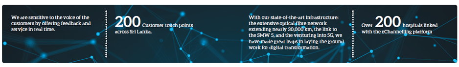
SME solutions
We offer a range of services to our SME clients to including voice, networking, data hosting, and managed services. These are specially tailored to the unique needs of the respective entity.
Kiyawamu.lk – SLT digital book store
www.kiyawamu.lk is an online book reading portal and multi-vendor printed book store. A range of eBooks and printed books are available to purchase online under different categories. eBooks are available in ePub and PDF versions.
01awards.lk – SLT Zero One Awards for Digital Excellence
The SLT Zero One Awards is a unique programme that recognises and rewards excellence in digital initiatives across the island. The awards recognises outstanding digital products and services, and the corporates and individuals who have made that possible. The first edition was a success with over 450 entries. Digital excellence of corporates and individuals were recognised through the awards of Best Digital-enabled Product/Service, Best Digital-Integrated Campaign, Best Community Empowerment Programme, Best Digital Media Agency, Best Website or Microsite, and Best Use of Mobile.
Guru.lk – eLearning content
Sri Lanka’s leading eLearning portal has signed up with SLT to enable SLT broadband customers to pay for online study courses through the platform. The online portal emphasises on the value of digital education as it eliminates barriers imposed on learning as a result of non-availability of material across geographies. Alongside the convenience it offers, this model of education is also cost and time effective.
Our mobile ICT products and services
Mobile broadband: We are the “Fastest Broadband Network”
We remain committed to upholding the broadband penetration rate in Sri Lanka by continuing to provide exceptional user experience and affordable options to consumers. SLT Mobitel was ranked the “Fastest Broadband Network” on 4G by the Telecommunication Regulatory Commission of Sri Lanka (TRCSL). Furthermore, SLT Mobitel was awarded the “Fastest Mobile Network in Sri Lanka” by Ookla Speedtest. With the roll-out of LTE technology, Mobitel customised its portfolio of products to adapt to this network and gave customers incentives to move onto it as well through the introductions of tariff plans and device plans. The initiatives have been successful in migrating customers from the 3.75G network to the 4G/4.5G network.
Digital services
mCash
Our mCash service continues to deliver exceptional results. We celebrated the 4th year anniversary in November 2017. During the year, we expanded our retailer network to reach 16,000+ island-wide touch points including Mobitel branches, SLT Teleshops and Singer Mega outlets, supermarkets, leading banks, 650+ Commercial Bank ATMs for cardless withdrawals, and 300+ Pay & Go Kiosks located in central areas for mCash services. Furthermore, in 2017, SLT Mobitel partnered with Keells Super outlets to enable mobile users to pay utility bills and make mCash deposits at Keells Super outlets. At the Slim Brand Excellence Awards 2017, mCash was awarded the Online Brand of the Year Silver Award.
Car Doctor
We introduced a smart vehicle tracking device; for users to monitor their vehicle’s performance and progress while it is in use. This is an addition to our Internet of Things (IoT) portfolio.
Healthcare
We acquired eChannelling PLC in September 2016. This connects us with over 210 hospitals linked with the platform, giving customers access to the largest channelling network in Sri Lanka with over 4,500 medical professionals. The network possesses over 2,000 channelling agents. Channelling is possible through SLT landlines as well as over 650 post offices island-wide. The service is not limited to channelling doctors, and users can contact various third parties and health service providers for additional benefits. In 2017, SLT extended the eChannelling service to Smartline and 4G LTE customers with a call charge of Rs. 1.50 per minute. This year, eChannelling earned the ISO 9001:2015 certification and version upgrade as a measure of the consistent quality of the products and services it offers in order to enhance service standards.
mLearning
SLT Mobitel’s mLearning platform continues to empower and drive education in Sri Lanka. It is the only comprehensive platform in Sri Lanka that gives a student the opportunity to follow an entire university course in a virtual environment. The platform has been embraced by numerous universities and educational institutes in Sri Lanka.
mTicketing
SLT Mobitel introduced a new feature in this service, whereupon a user can obtain electronic tickets to sites of interest in Sri Lanka. The project covers several noteworthy tourist destinations in the country like the Pinnawala Elephant Orphanage and Victoria Park in Nuwara Eliya. Mobitel plans to extend this feature to all relevant attractions in the country, thereby creating a national electronic ticketing system. We have extended our mTicketing platform for Railways, to all telecommunications operators in Sri Lanka. Therefore, any user can obtain railway reservations through their preferred network.
Other value added services
We introduced a device manager platform that furnished all data-enabled devices with GPRS settings to improve data penetration. Our Mobitel TV portfolio provides customers with a greater variety of entertainment options. A “bus booking” service enables customers to book bus tickets via carrier billing. Carrier billing also affords customers the opportunity to subscribe to online magazines.
AirTicketing via the mobile is a unique value innovation pioneered by Mobitel, for the first time in the Asian Region. In 2017, Mobitel obtained the prestigious IATA license for AirTicketing becoming the number one IATA licensed Mobile network provider in Asia, partner of Sri Lankan Airlines, Emirates, Qatar Airways, Singapore Airlines, Cathay Pacific and Jet Airways.
Voice initiatives
We carried out many initiatives to promote prepaid and postpaid packages amongst our customers. These included the Cash Bonanza Montero Extravaganza, the
Our market presence
Our teleshops and regional telecommunications offices are located centrally to enable users to conveniently avail of our services. Our dealer and reseller network extends island-wide, helping customers to easily acquire pay phone cards and services to register for broadband and LTE technologies.
Customers can pay their bills at all relevant banking institutions, supermarkets, and sales outlets and selected companies.
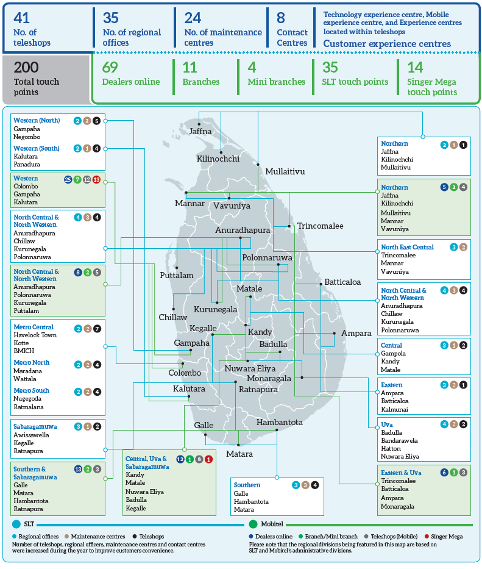
Our customer base growth
In 2017, SLT provided over 137,500 fixed line connections. We also provided over 297,500 broadband connections, which is an exceptional achievement, compared to previous year. In addition, we provided over 113,000 PEO TV connections. All above achievements were supported by our up-to-date FTTN, FTTH and 4G LTE (Fixed) technologies. We recorded an increase of 28% in the uptake in broadband connections for this period. New PEO TV connections equally increased by 31%. In our Mobile operations our customer base grew up to 6,800,000 an increase of 6%.

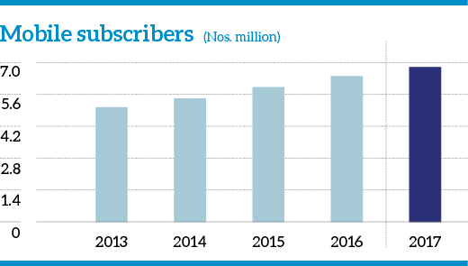
We provide a superior customer experience by engaging with our customers in real time
At SLT, we have recognised the importance of providing an overall customer experience. The customers’ opinion of SLT is influenced by everything we do from responding to a complaint, fixing a fault, greeting a customer at an SLT Teleshop to marketing new products, or fulfilling a contract. The total customer experience matters. Especially with our strategic direction to create synergy within our Group to present one face to the customer, it is of paramount importance that the Group works together, in all our business lines, to cater to the needs of the customer and enhance the overall customer experience. Our substantial investments over the past few years, have emphasised our willingness to offer to our customers a superior network and customer service levels, supported by a very wide range of mobile and fixed products. We are sensitive to the voice of the customers and provide feedback and service in real time.
In a highly competitive industry, we have to be extra mindful of the needs of the customers. Our customers want a consistent, responsive, reliable service and a telecom provider that offers a great experience and products that improve their lives. SLT Group has made great progress in these areas and we are committed to continue delivering superior customer service in the future.
Information on products and services are provided through multiple channels
We engage with customers through diversified means to provide accurate and relevant information on our products and services. They include: one on one interactions, our Contact Centre, SLT’s corporate website and social media accounts, mailers and newsletters, brochures, our customer satisfaction survey, ICT workshops, enterprise customer forums, and customer visits and meetings. Traditional media channels are also used to market and advertise our products and services to the general public.
We have established a distinct hotline, 1212, for customers to obtain information and log concerns. This is a 24-hour service with zero cost to the customer. Any resulting user comments are entered into our operational support system (OSS). This helps us in refining our services as appropriate for further improvements in customer care.
Contact Centre
Our Contact Centre recorded a total of over 12 million calls in 2017; of which circa 8 million were to agents. A customer satisfaction rate of 90% was recorded throughout the year; we were also able to fulfil the service level KPIs established by the Government Information Centre, GIC (1919) and the Sri Lanka Insurance Corporation (SLIC) in this domain. (GIC and SLIC have outsourced their contact centre operation to SLT Contact Centre).
Our Contact Centre launched the “Knowledge Hub”, as a tool to facilitate Contact Centre officers in answering calls. There was improvement in quality monitoring and call quality throughout the year. Call quality has improved by 2.39% YoY, from 87.65% in 2016 to 90.04% in 2017. Our Contact Centre also recorded a 100% availability with zero down time over the year.
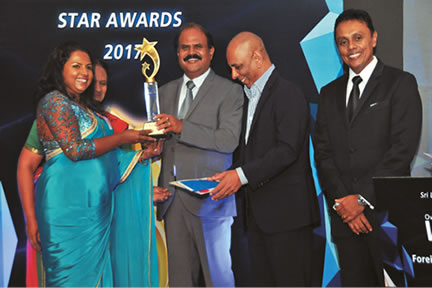
There is a stringent process in place to manage complaints
Effective management of customer complaints and providing resolutions is a vital part which contributes to the overall customer experience. We have a stringent process in dealing with all complaints. Any complaint received by the contact centre and enterprise help desk are entered to the OSS, and forwarded to the corresponding work group. A trouble report will remain in the system unless it is attended to and the matter resolved. The officer in charge of the work group oversees the system and organises resources to address the issue. The officers are themselves monitored by deputy general managers.
Our account managers frequently visit our enterprise customers to ensure that they are receiving all the support they require from SLT. Enterprise customers are equally furnished with the contact details of senior staff to escalate any issues to attention resulting from any discordances in expected service levels.
The Plant Maintenance and Customer Service (PM and CS) Unit conducts an age analysis of existing trouble reports and conveys results to relevant senior officers. Samples of closed trouble reports are selected, and relevant feedback is obtained from the customers who lodged the initial, corresponding complaint. Further steps are taken if the customer is not satisfied.
Customer experience is the key differentiator
Our customer loyalty depends on customer satisfaction. We maintain a superior customer experience in order to keep our customers happy. SLT Group has realised that offering a superior customer service is an integral part of the digital transformation and Vision 2022. For the past few years, SLT has conducted a Customer Satisfaction Index (CSI) studies to identify and measure the key expectations of customers, evaluate the level of satisfaction across all touch points, and to identify any other issues. Currently we are practicing Ron Kaufman Service Architecture model to deliver superior customer service to our valued customers.
This year too, SLT conducted a customer satisfaction study conducted by a reputed market research agency to maintain objectivity, high standards, quality assurance, and data accuracy. The sample size of 2,500 is a representation of all customer segments (SME, Consumer, Enterprise), business verticals, and geographical areas. A face-to-face interview, lasting about 45 minutes, were followed by an extensive questionnaire. The findings were shared among all the stakeholders of the company and awareness sessions were conducted internally to make our team aware of the principal pain points of our customers. The progress on the customer pain points were further reviewed internally at the Customer Experience Management (CEM) Forum chaired by the GCEO.
| CSI (Customer Satisfaction Index) Overall Score | 79% |
| CSI – Consumer | 81% |
| CSI – SME | 76% |
| CSI – Enterprise | 71% |
| NPS (Net Promoter Score) Overall Score | 40% |
| NPS Consumer | 47% |
| NPS – SME | 32% |
| NPS – Enterprise | 31% |
This year we have introduced a globally practiced model to calculate CSI to benchmark with the industry.
Service assurance KPIs in 2017
| Average 2017 | SFI* (%) | USI** (%) | SRI*** (%) |
| Megaline | 73 | 82 | 59 |
| Citylink | 74 | 90 | 50 |
| Broadband | 79 | 84 | 63 |
* The Service Fulfilment Index (SFI) indicates the rate at which we satisfy the delivery of a product or service within a promised time (in number of days) for new customers.
** The Uninterrupted Service Index (USI) references the rate at which services are provided to existing customers without any breakdown or fault.
*** Service Restoration Index (SRI) indicates the rate at which fault clearance is executed within a promised/standard time-frame.
Knowledge sharing
We engage in knowledge sharing activities with enterprise customers through customer forums, individual discussions, product launches, and the inauguration of national initiatives. We conduct customer forums and annual conferences for the benefit of SME customers. These events allow decision-makers to meet the top management at SLT. We equally get the opportunity of receiving direct customer feedback during these times.
Marketing campaigns
We rolled out several marketing campaigns and promotions to drive awareness of our products and services to the general public. The following are some selected marketing campaigns undertaken by the SLT Group in the year 2017:
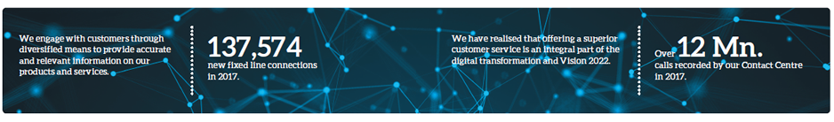
Fixed ICT – Marketing campaigns and promotions
“Buy 1 Get 1 Free” – Broadband promotion
The campaign offered SLT broadband customers the chance of getting an equal amount of free GB for each extra GB top-up they purchased.
Free internet from SLT public Wi-Fi hotspots
SLT offered unlimited Internet for SLT broadband customers who login from SLT public Wi-Fi hotspots around the country.
“Social Media Free Week”
Under the “Social Media Free Week” from 10 to 16 April 2017, we offered free access to social media platforms like Facebook, Youtube, Twitter, Linkedin, Instagram, etc. We also launched “My Phone” package, a low monthly rental voice package. There were also a number of broadband promotions where our customers were able to win free data from SLT.
A comprehensive list of other promotional activities and campaigns can be accessed from our corporate website.
Mobile ICT – Marketing campaigns and promotions
Promoting mCash
There were a number of campaigns to encourage customers to engage with mCash and mCash transactions: Discount promotions for Valentines Day, Ramazan, Mothers’ Day, seasonal holidays, mCash app promo, standing orders via mCash Promo, mCash Ceylinco, mCash Sathosa, Union Assurance Premium payments, NSB i-Saver, etc.
Kotiyak Watina Adahasak
To drive innovation in the digital era and to support the entrepreneurial spirit of the country SLT Mobitel partnered with Sirasa TV to create a reality TV programme for inventors and young entrepreneurs. The programme recognised technology-related ideas. Contestants were rewarded with financial assistance and technical expertise to make their dream a reality to create a commercially viable product.
Launch of X-Station
SLT Mobitel launched X-Station, the first hi-tech Internet of things (IoT) concept store of its kind in the country. It showcases the latest technologies and gadgets that are trending around the world today and provides users the opportunity to experience them. The X-Station features smart home, 3D printing, AR, smart health, VR, smart kids zone, and drones.
Upahara
There was an Upahara Avurudu campaign to promote postpaid services during the season which was coupled with a range of latest smartphones along with a special Upahara connection. The same campaign was also revamped mid-year to boost Upahara sales.
“Cash Bonanza” season 2
The highly anticipated SLT Mobitel’s “Cash Bonanza Montero Extravaganza” season 2 was launched.
SLT Mobitel’s prepaid, postpaid, and broadband customers can take part in the competition. During 2016 and 2017, the Cash Bonanza Extravaganza created immense excitement and anticipation amongst its customers, gifting 24 luxury Montero jeeps through the two years to 24 lucky winners. In addition, cash prizes were awarded to over 800,000 lucky customers throughout the two years. SLT Mobitel customers received Rs. 700 million throughout 2016 and 2017.
Nethrabhimana
SLT Mobitel together with Sri Lanka Federation of the Visually Handicapped launched “Nethrabhimana”. In the first phase of the project, the visually-impaired were able to experience the beauty of Vesak by listening to Vesak Pandol stories. The second phase of the project will incorporate donors and sponsors to donate money towards building a “Voice Library” for the community of the visually-impaired.
Digital services promotions
To drive the digital services category various promotions with prize giveaways were conducted throughout the year: mQuiz promo, Starfriends promotions, mTunes promotions, movie tickets, Astrology-related services, Junior promotions, News alert promo, CELEBZONE promos, Fairfirst Insurance cover, Workforce promo, etc.
A comprehensive list of other promotional activities and campaigns can be accessed from our corporate website.
SLT understands the needs of the digital natives
SLT has recognised that the digital age belongs to the younger generation. This demographic made-up of digital natives is changing the telecommunication industry. The increasing mobile penetration, the rise of OTT players, and the popularity of social media have transformed the sector. SLT is geared to provide the future of tomorrow with all possible opportunities to thrive through our varied digital offerings. In 2017, there were a number of initiatives taken to cater to the needs of the younger generation ranging from online gaming competitions, selfie competitions to social media campaigns. The following are some of those initiatives aimed at digital natives:
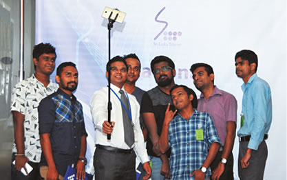
“SLT 4G Digital Cycle Tour”
SLT Facebook fans were able to play “Avurudu Cycle Tour” game daily and the game leaderboard was updated in real-time. The top 15 players were ranked in the game everyday. Extra GBs were added to the winners’ broadband accounts.
ROG Masters 2017
ROG Masters 2017 is a professional world-class gaming tournament. The Sri Lankan qualifiers for this event was held at Crescat Boulevard from 29 to 30 July 2017. SLT was the network partner facilitating high speed SLT Fibre connectivity for this event highlighting SLT as the premier network provider for gaming.
Sri Lanka Robo Games 2017
This competition was organised by the Institution of Engineers of Sri Lanka and the University of Moratuwa with the partnership of SLT, challenging the youth of Sri Lanka to use their creativity to construct and programme autonomous robots. The games comprised of an undergraduate category and a school category. Team “Code” of ICBT were adjudged the winners whilst the “Titans” from SAITM were the 1st runners up and the “White Walkers” from the Faculty of Engineering of the University of Ruhuna were the 2nd runners up in the Undergraduate category. In the “open” category, team “Zenith” from Royal College Colombo were adjudged the winners, Team “LHAMO” from Thalawakele T.M.V. and Team “Curiosity” from Kuliyapitiya Central were adjudged 1st and 2nd runners-up respectively.
SLIoT Challenge 2017
Sri Lanka's first dedicated IoT competition “SLIOT Challenge” was held at Techno 2017 Exhibition, a collaborative effort between SLT, University of Moratuwa, and the Institution of Engineers of Sri Lanka (IESL). This was the ideal platform to demonstrate the opportunities and challenges with the emerging IoT concept.
The challenge was held under “Graduate” and “Open” categories. Team “ASDF” of University of Moratuwa, won first place in the Graduate category showcasing an innovative solution for a monitoring system for the usage of water for plants. 1st runner-up was team “Innovation Seekers” from the Institute of Vocational Technology who proposed a monitoring system for machinery condition. Team “Zeon” won the Open category with their IoT based agriculture management system, whilst team “Smart Paddy Fields” were the 1st runner-up for their creative solution in paddy field management.
eSports Championship 2017
SLT organised the eSports Championship 2017 at INFOTEL exhibition, Sri Lanka’s largest ever gaming tournament, powered by SLT’s next-level fibre optic broadband from 2 to 5 November 2017. Over 1,500 gamers that participated in the competition while over 20,000 people visited the SLT eSports championship stall. Event TV covered the event live. It was also streamed live on Facebook. The winners walked away with cash prizes.
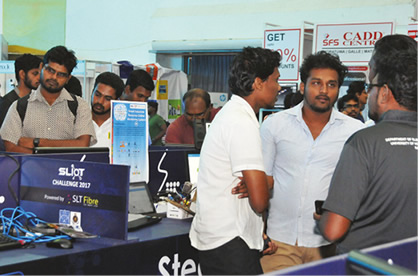
SLT eSports GamerFest 2017
This was another gaming event sponsored by SLT. This event was conducted in ICBT Campus on 12 August 2017 with SLT as the network partner.
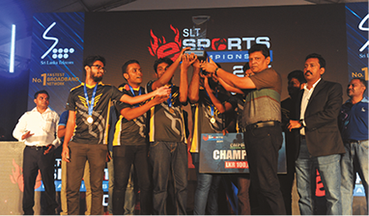
New enterprise business ICT solutions and MoUs
In 2017, SLT Group engaged with numerous high profile clients to provide them with ICT solutions and related services. The following are some of the high profile contracts that we acquired over the course of 2017:
We have a number of medium-scale entreprise customers with whom SLT has partnered to provide a number of services as follows:
| Customer | Service |
| Araliya Green City Hotel, Nuwara Eliya | Hospitality IPTV Solution |
| Grand Mountain Hotel, Matale | Total Communication Solutions |
| Regional Development Bank | HRM Solution Implemented on AKAZA Cloud |
| Trymass Media | Total Data Solution including Infrastructure and VPN Network |
| Damro | CommuniGate Pro Mail Solution |
| Sathosa | CommuniGate Pro Mail Solution |
Partnerships and MoUs with the Government of Sri Lanka
- Lanka Government Network LGN 2.0. Under this project 860 Government establishments will be connected.
- SLT is developing the telecommunication infrastructure facility and modern ICT solutions to the iconic Lotus Tower.
- Core-banking solution provided to the Co-operative Rural Bank in Polonnaruwa District.
- SLT is developing state-of-the-art ICT solutions for a new administrative complex of Western Provincial Council in Battaramulla.
- Under the Pibidemu Polonnaruwa Project, total ICT solutions to the museum and library in Polonnaruwa will be provided by SLT.
- SLT has partnered with Central Engineering Consultancy Bureau to provide ICT solutions as the primary solutions provider.
- SLT entered into a partnership with the BMICH, becoming the iconic venue’s official ICT partner. Wi-Fi coverage of the premises will be provided by 23 Access Points (APIs) and will cover a multiple number of locations. This project aligns with the public free Wi-Fi initiative by the Government.
Special initiatives undertaken in 2017
Lanka Government Network (LGN 2.0)
The LGN is a strategic project that is designed and implemented to link and upgrade Government entities, using a single network. SLT has set up an LGN fibre optic network to cover 315 Government establishments, and will provide these with Internet speeds of up to 100 Mbps, along with a host of other benefits. The network will significantly increase the efficiency and productivity of Government processes; which will consequently benefit the public as well. SLT hopes to connect 860 Government institutions (331 divisional secretariat divisions, 25 district secretaries, 50 ministries, 87 departments, 48 hospitals, and 321 other state establishments) by the end of the year 2018.
Data Centre (Tier III) opened in Pitipana
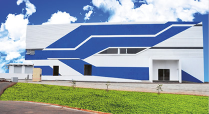
Sri Lanka’s first purpose-built, Tier III data centre is now in operation. This is dubbed the national data centre, since it provides secure, reliable data hosting facility, and cloud services to all Sri Lankans. This move is aligned with Sri Lanka’s journey into digital transformation and SLT’s Vision 2022. The data centre will benefit SLT’s enterprise customers as well as Government entities. SLT will also provide our expertise to our users.
Roadside Wi-Fi panels
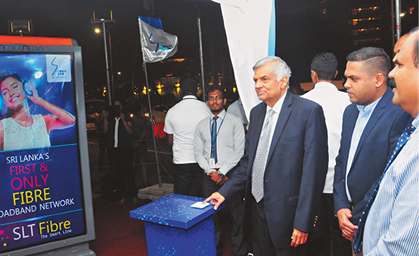
As another initiative of expanding Wi-Fi footprint in Sri Lanka, SLT launched Roadside Wi-Fi panels in partnership with Mobile Media Ads (Pvt) Limited. Initially 21 sites will be deployed in prominent locations at Colombo metropolitan area. Our customers can access the following SSIDs: Public Wi-Fi, SLT Broadband, SLT Prepaid, through our Wi-Fi panels. They will also be equipped with a smart recycle bin, phone charging outlets, and an advertisement panel.
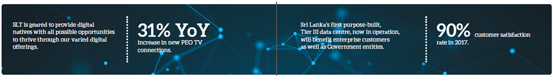
Techno City and Megapolis
Under the primary objectives of transforming urban community and its lifestyle, maintaining a high level in quality of life, and to create green, sustainable, and smart urban settlements the Ministry of Megapolis and Western Development has initiated an array of development projects. The ministry’s flagship project Techno City which will comprise of five technology institutes including the National Science Centre, Satellite Centre, and Technology University.
SLT has been appointed as the digital infrastructure provider for this project. SLT will design, implement, and maintain the required wired and wireless transport while distributing infrastructure for all licensed ICT service providers in Sri Lanka.
Port City
The Colombo Port City project, which covers 233 hectares has been planned for two stages and will be completed in eight years. It will include all related facilities such as access roads, electricity, communication, and all other infrastructure facilities. The development will comprise of five different precincts including the Financial District, Central Park Living, Island Living, The Marina, and the International Island. Built on the latest sustainable city designs and smart city concepts, Port City Colombo will be one of the most unique sites in South Asia. SLT has signed an agreement where SLT is committed to provide the required ICT infrastructure for the Port City including high speed broadband services provided through the fibre network, television content through IPTV platform, cloud services, and smart living solutions.
“Smart living” at Altair
With SLT’s goal to offer smart living to Sri Lankans, the Group came to an agreement with Indocean Developers (Pvt) Limited to provide SLT smart living solutions to the iconic Altair Tower that is nearing completion in Colombo. This will include high speed broadband services up to the speed of 100 Mbps and high definition television content through the IPTV platform to the residents of this landmark property. Occupants will have access to all digital (cloud and IoT) services provided by SLT. Wi-Fi access in common areas and a number of smart and mobile applications will also be offered to seamlessly and remotely manage connected homes from anywhere, at anytime, on any screen in real time.
SLT’s smart living and smart building solutions are offered to many of the high-rise building complexes in Sri Lanka.
SLT revamps the Sumathi network
Sporting Star under the U W Sumathipala & Sons (Private) Limited is the premier betting chain in the country. Sporting Star has its own racing publication and telecasts UK horse races from their betting centres. They required simultaneous delivery of private content through two dedicated channels from a centralised studio complex to 175 of their branches.
SLT proposed to deliver the required channel list including the two dedicated TV channels over an IP platform to the requested locations. In addition, 20 PEO TV channels (sports pack) will also be provided.
In total, there will be 350 TV points at 175 different locations island-wide connected to SLT network via our fibre network. There will also be a bandwidth upgrade of existing IPVPN to 1 Mbps through fibre.